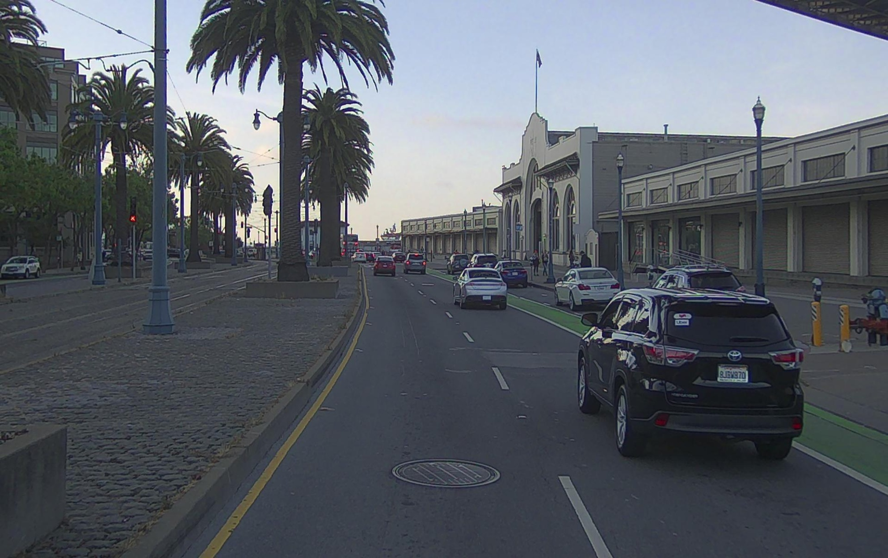
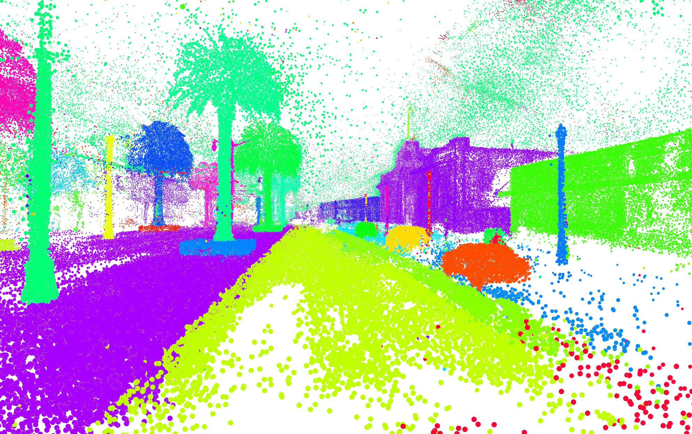
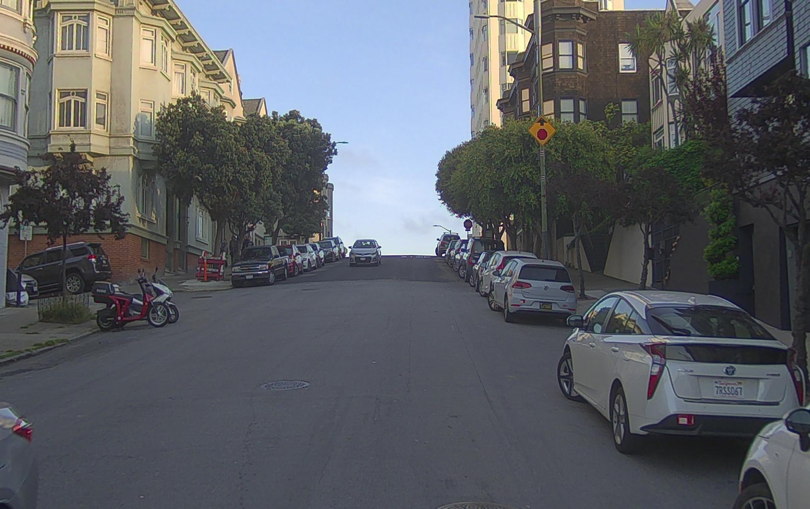
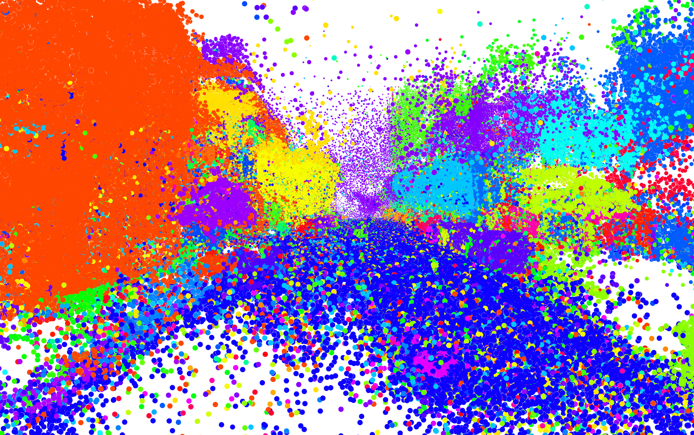
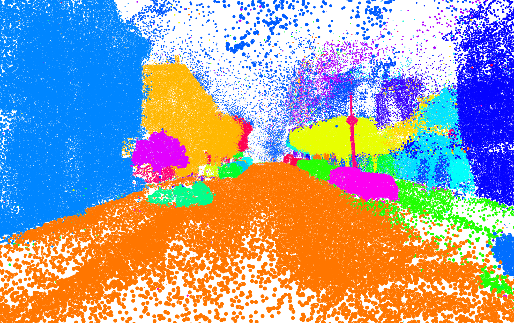
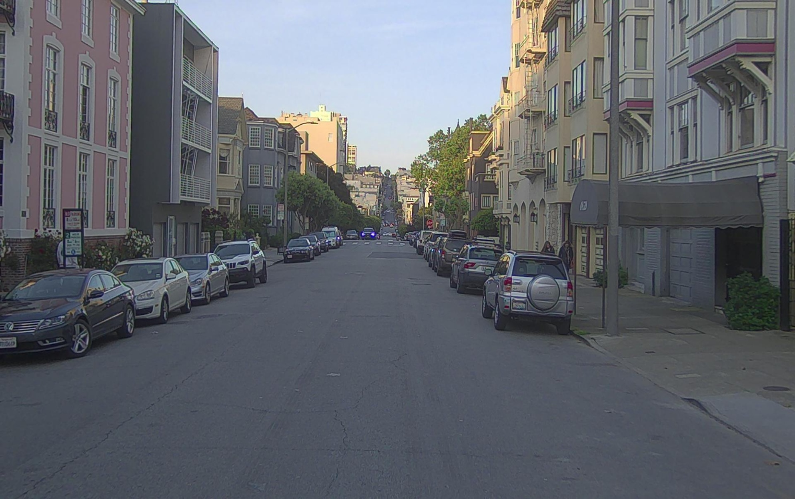
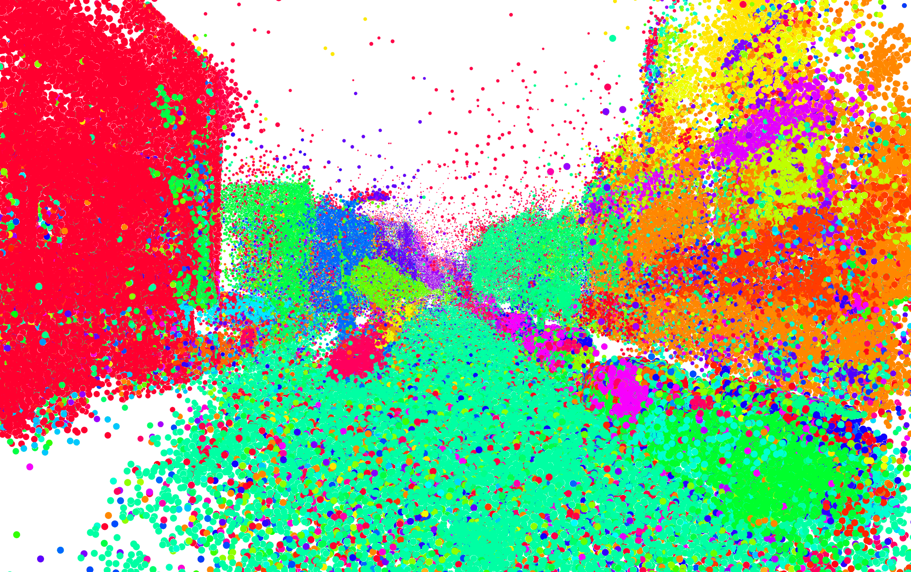
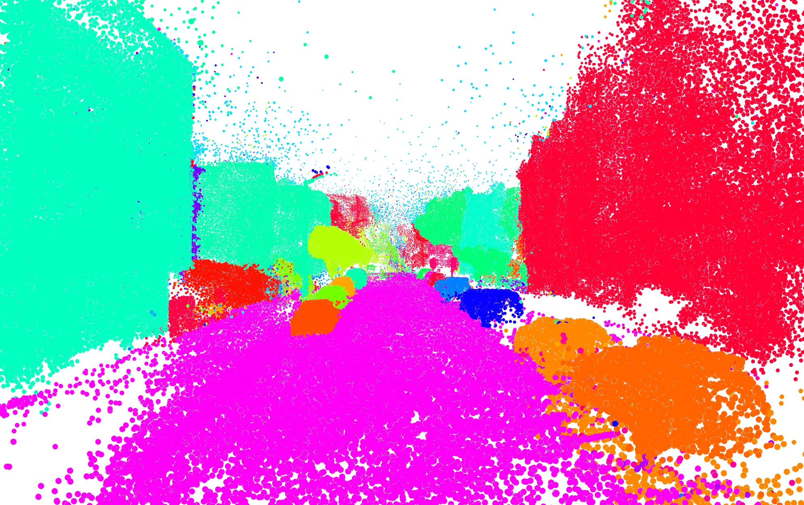

Point-level Instance Segmentation
Our approach achieves instance-level reconstruction of driving scenes, producing noise-free results and demonstrating superior spatial consistency compared to baseline methods.












Camera Data
GSGroup
OpenGS
Ours